Dispatch · Video walkthrough
Dispatch: closest recipients and conditional run-card decisions
Use a real located training call to compare personnel and units, inspect conditional Yes/No and stale-position explanations, apply a proposal, and review a saved allocation.
Before you begin
- Authorized fictional Department 51 account and local isolated training stack; no real provider delivery test.
- Dispatch.RunCards and Dispatch.RunCardConditions enabled with Academy Training Alarm matching Urgent / Structure Fire, eight-minute engine condition, Academy Initial Response package and one alarm level.
- Engine51 crew1/1 with Herrmann, actual current statuses, station fallback and separately declared simulated officer station fixes; preserve original three active calls.
- Use only a disposable training call for Create/Re-evaluate/Close, verify fields and recipients before submitting, and use actual Notify everyone control off for the demonstration close.
Chapters
- Prepare the incident location and matching fields
- Read a conditional result and its shortfall
- Review and apply the complete proposal
- Compare closest people, names and availability
- Choose the unit and distinguish its group
- Compare a distant incident and return to the near point
- Save a controlled training allocation and inspect its pin
- Re-evaluate deliberately and finish the exercise
Watch the walkthrough
Step 1
Prepare the incident location and matching fields
Begin in New Call with a clearly named training exercise. Complete Name and Nature, then choose the department’s Priority and Type. Here, Urgent and Structure Fire match the prepared Academy Training Alarm. A run card is configured beforehand in Core administration; the dispatch app uses that configuration. Enter and check the incident’s Latitude and Longitude before comparing resources. These are fictional incident coordinates, not a device location. The first exercise stays unsent while we inspect its recommendation. This browser recording cannot establish native background GPS collection or delivery of an alert to a real device.

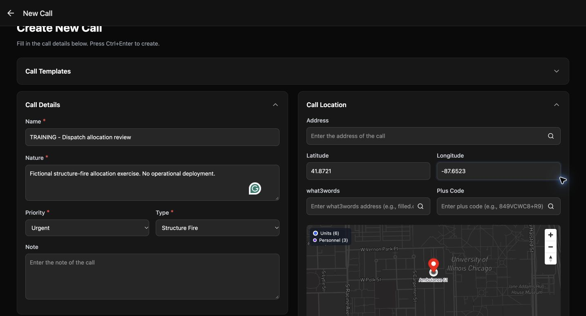
Practice
Prepare an unsent training call and verify its type, priority and coordinates before opening the recipient picker.
Step 2
Read a conditional result and its shortfall
Under Dispatch To, read the named card and its Decision. The rule asks whether an engine is within eight minutes. The first preview says Yes: Engine 51 has an estimated two-minute response. That does not mean the entire response package is complete. Ideal configuration not available and Could not fill explain that the incident-officer positions are too old. Read the explanation before accepting a proposal. An available vehicle and an eligible officer are separate requirements. The advice to send the initial response is guidance from this configured card; it is not proof that resources have already been dispatched.
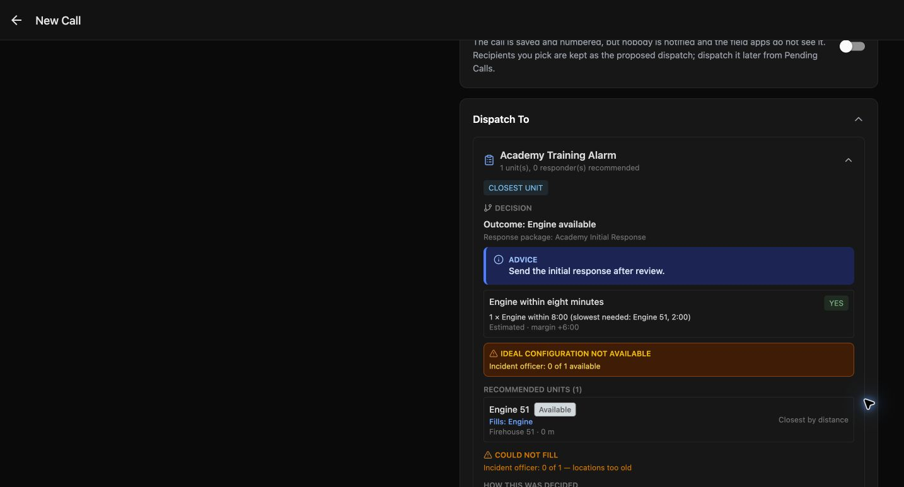
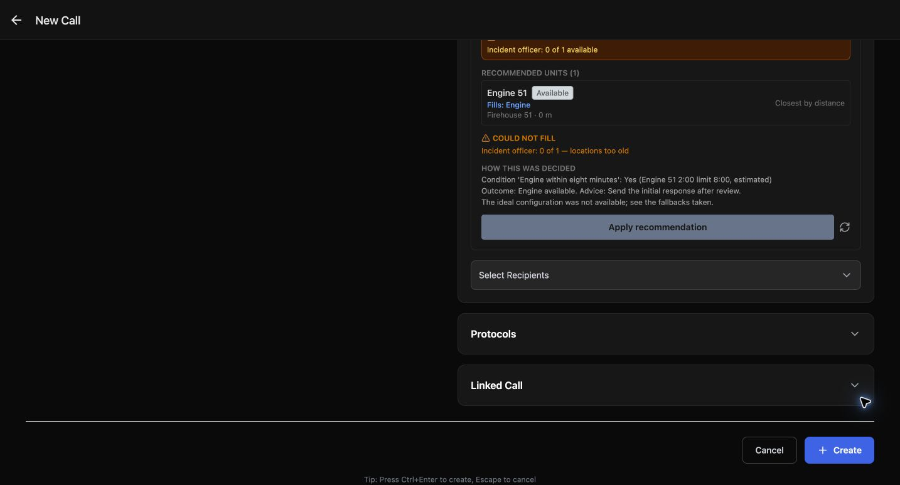
Practice
Identify the successful engine condition and the separate officer shortfall without treating the package as fully staffed.
Step 3
Review and apply the complete proposal
For the next preview, the three unchanged fictional officers received fresh simulated station fixes through the controlled training setup. Their statuses and earlier history were preserved; no device GPS was used. The refreshed proposal now lists Engine 51 under Recommended units and Christopher Herrmann under Recommended personnel. The Fills labels explain which package requirement each resource satisfies. Read both rows and their reasons, then choose Apply recommendation. The form changes to two selected. Applying the proposal prepares a selection; it does not create the call. Open that selection to inspect the actual people and units before proceeding.
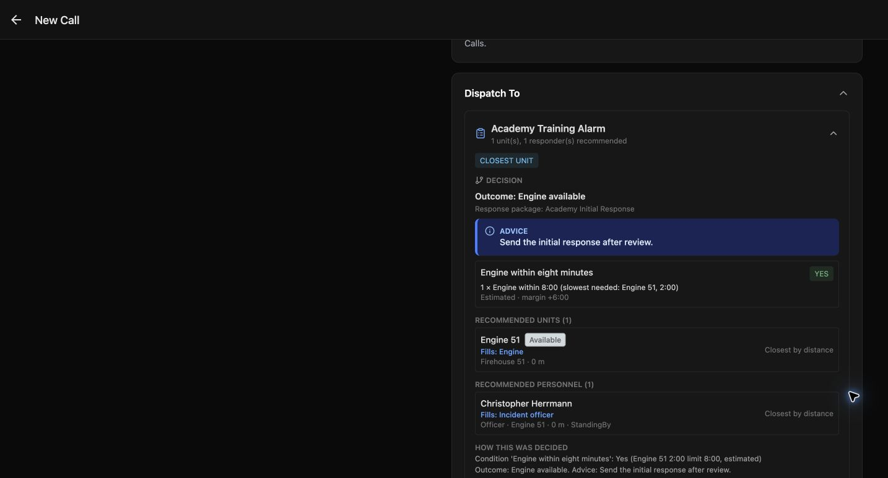
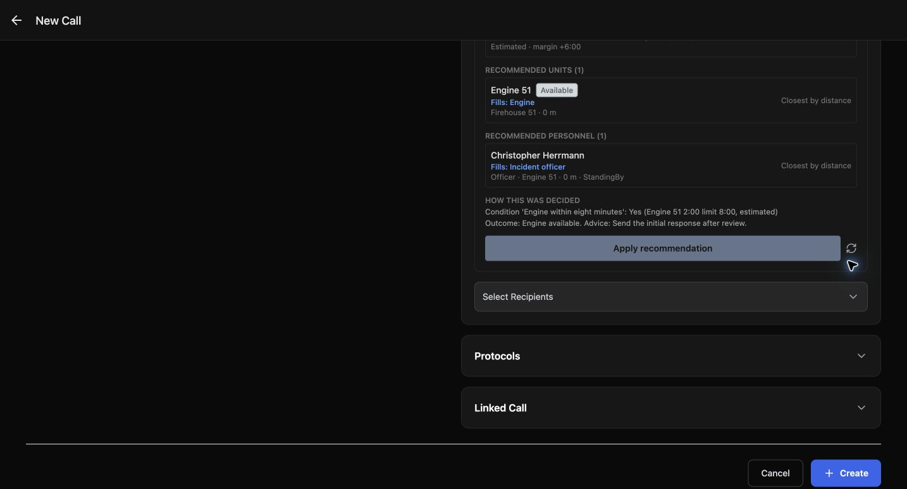
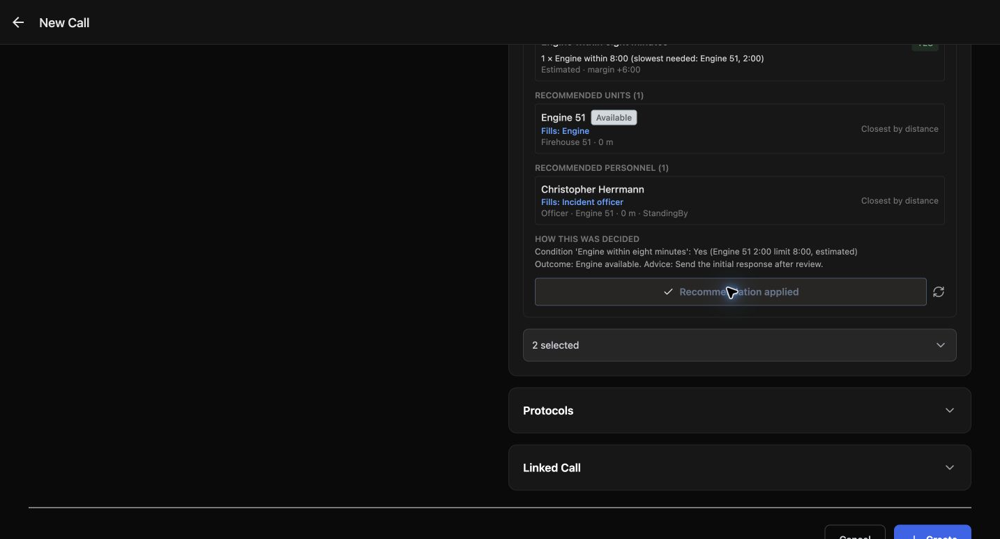
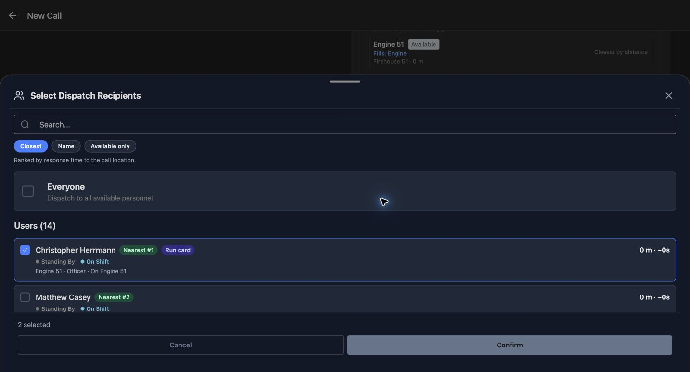
Practice
Read the two Fills labels, apply the proposal and verify that only the intended two recipients are selected.
Step 4
Compare closest people, names and availability
The Select Dispatch Recipients sheet offers Closest, Name and Available only. Closest follows the server’s location-aware board. Herrmann appears with Nearest number one and the Run card badge. Name changes the order; Blake Gallo then appears with Unavailable and No location. The absence of a location is useful information, not an invitation to guess one. Available only reduces this example from fourteen users to twelve. Previously selected recipients remain selected, so review the checkmarks and total as well as the filter. Everyone is a broader recipient choice. Leave it clear when this exercise needs only named resources.
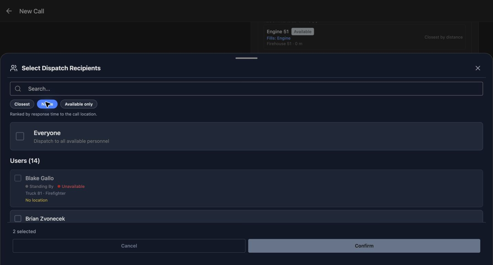
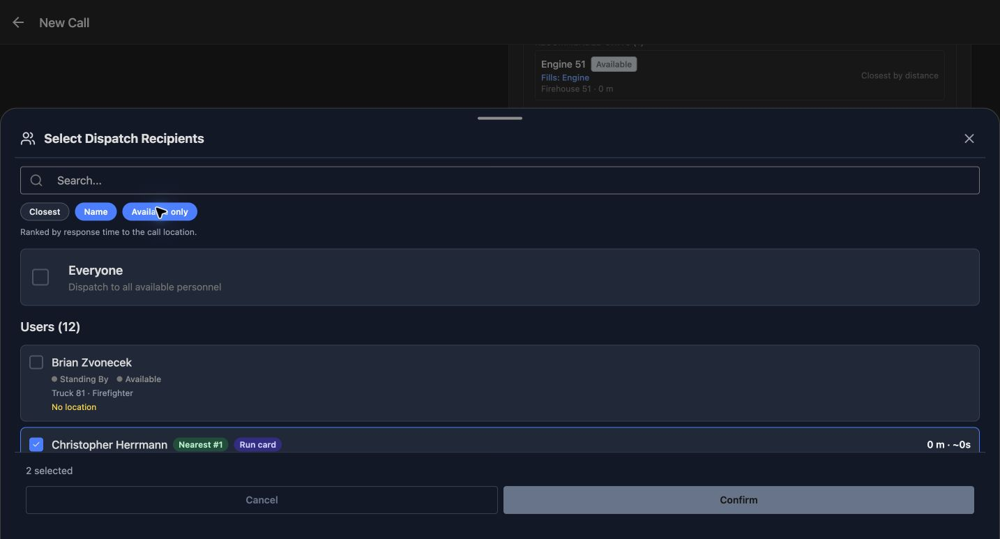
Practice
Compare Closest with Name, apply Available only, and explain why a No location row has no distance estimate.
Step 5
Choose the unit and distinguish its group
Search for Engine to narrow the sheet. The Groups entry called Engine 51 and the unit called Engine 51 are separate choices. In this example the group is unchecked and the unit is checked. Read the unit’s Available status, Herrmann’s crew assignment and At station position source. Its Nearest number three badge is its place among the board’s available units; it does not say that three engines are selected. The row shows an estimated travel time, while the board can rank units using turnout plus travel. Confirm returns the selected recipients to the call form. It is still separate from creating or dispatching the call.
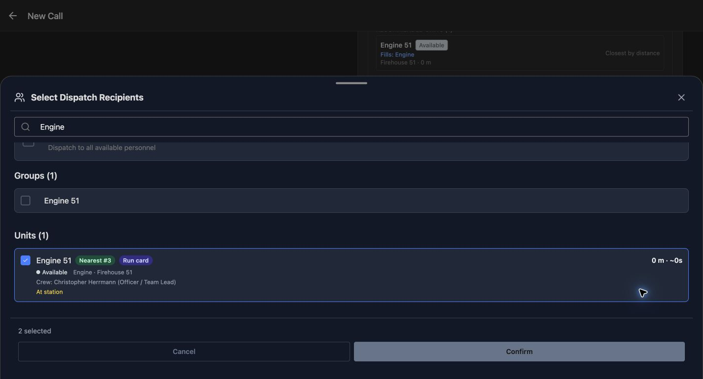
Practice
Find the group and unit with the same name, check the intended unit, inspect its crew and confirm the selection.
Step 6
Compare a distant incident and return to the near point
Changing only the unsent incident’s coordinates creates the distant comparison. The same engine now fails the eight-minute condition, and the outcome becomes Review alternatives. The advice-only branch recommends no additional package. The recipient sheet shows about one hundred and one kilometres and roughly one hundred and ninety-eight minutes for both Herrmann and Engine 51. The run-card response estimate is slightly longer because its response calculation includes turnout. These are estimates, not a promise of arrival. Notice that the earlier two selected recipients remain in the form even when the recommendation changes. Restore the near coordinates and review both the new decision and your selection.
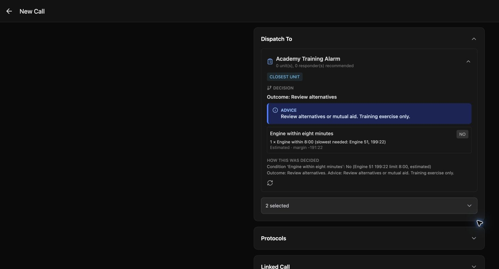
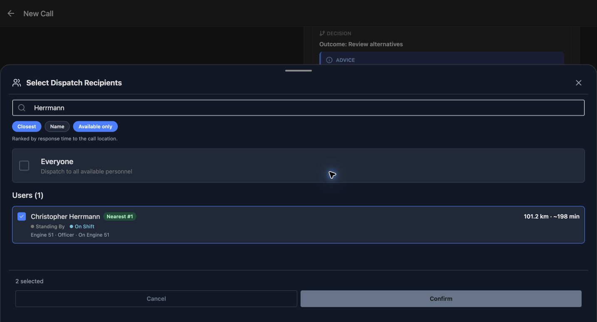
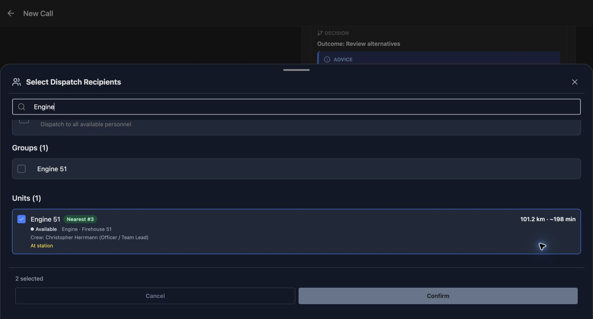
Practice
Move only the fictional incident point, compare the returned condition and estimates, then restore the near point and recheck recipients.
Step 7
Save a controlled training allocation and inspect its pin
For the saved example, a separate call named TRAINING ONLY, Dispatch allocation recording was created with those same two fictional recipients after checking every field. Open Dispatched to inspect what the application stored: Herrmann as a user and Engine 51 as a unit. Dispatch additional resources opens the existing call’s recommendation. Its banner says the decision was pinned from the dispatcher’s preview, and the explanation counts the engine and officer already on the call. Zero additional recommendations can mean the existing allocation covers the package. Strike alarm two is visible, but this training card has only one configured level, so no escalation is exercised here.
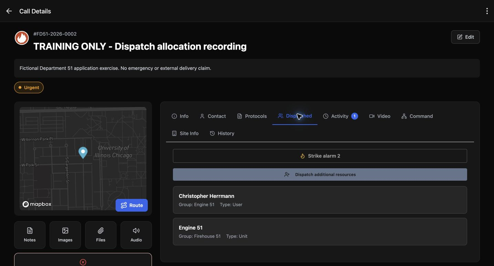
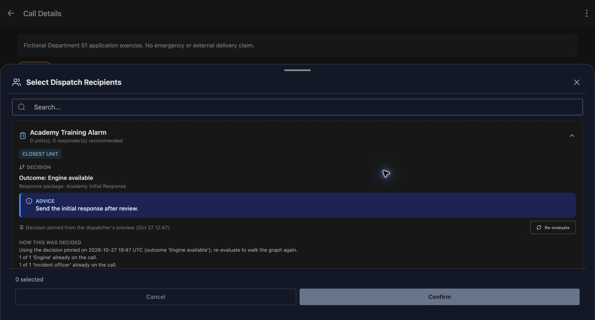
Practice
On the saved training call, compare its stored recipients with the pinned preview and explain why no additional resources are proposed.
Step 8
Re-evaluate deliberately and finish the exercise
Re-evaluate requests a current calculation. Here it returns No and Review alternatives after ordinary call creation changed the engine to Responding. Treat this as a fresh assessment, not another dispatch or evidence that the earlier recipients vanished. Cancel the picker without adding anyone. To finish this disposable exercise, Close Call uses Closed, a training note, and Notify everyone on the call switched off. Only this new call was closed. The console returned to the original three active calls, and Activity records the engine’s normal change from Responding to Released. Awaiting Resources is a separate queue for outstanding requirements; the captured queue is empty, so no requirement fulfilment or dismissal is claimed.
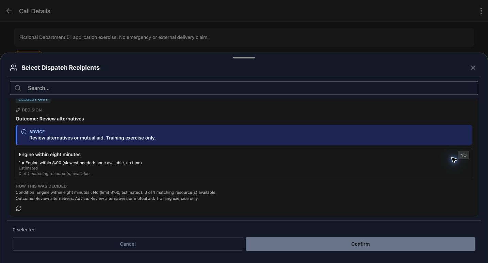
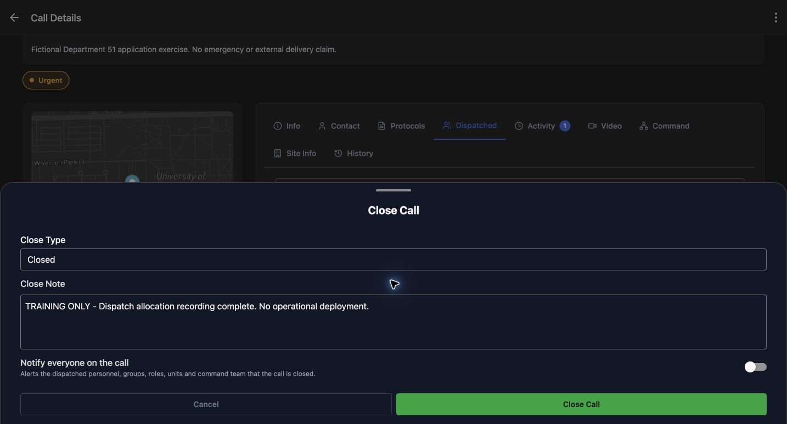
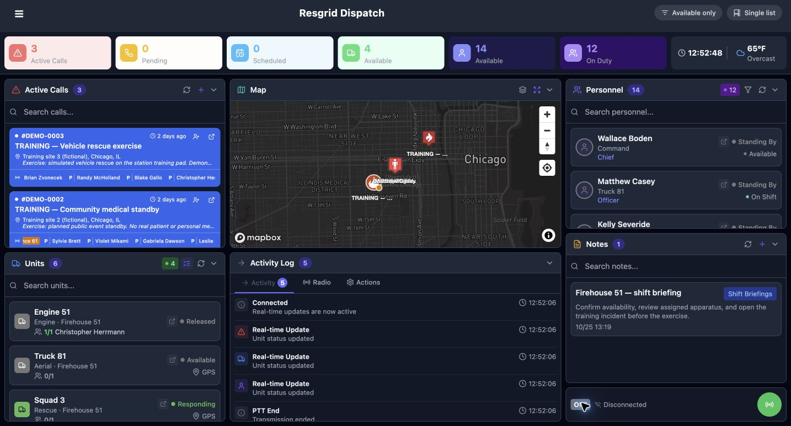
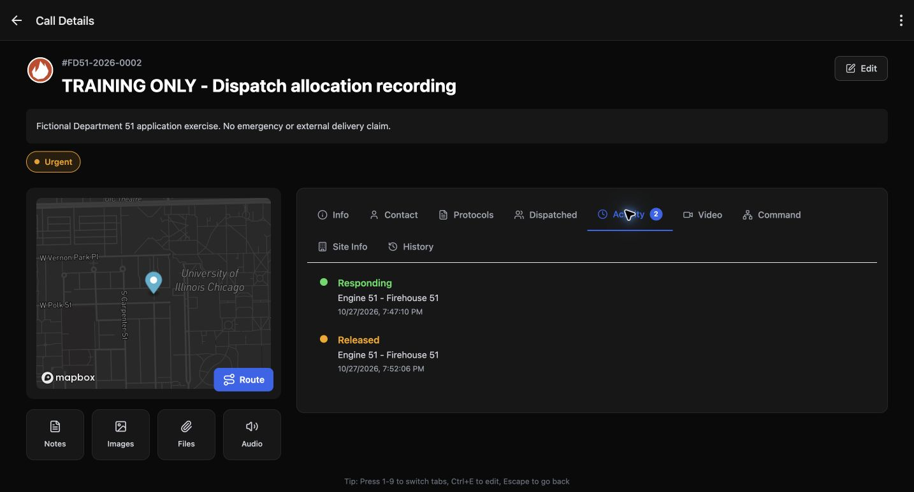
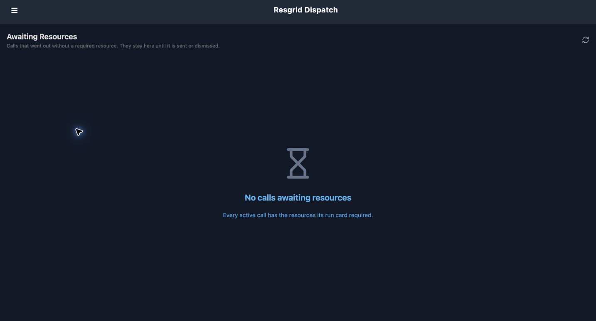
Practice
Explain the difference between a saved pin and a new calculation. Close only a disposable training call with the reviewed notification setting.
Examples for your department
- Fire / EMS
- Review a prepared engine-and-officer package, or repeat the closest-person comparison with an authorized medical resource policy.
- Community response
- Search for named on-duty volunteers, compare availability and avoid Everyone when only a specific team should receive the call.
- Search and rescue
- Compare a search vehicle’s crew with named personnel qualifications and inspect unknown-location rows before selection.
- Security
- Compare patrol availability with Name and Closest, then review the exact recipients before creating a training alarm.
- Wildland
- Use a distant staging-point exercise to read an estimated threshold failure and the configured alternative advice.
- Industrial
- Check a specialist’s current staffing, the vehicle crew and station fallback before accepting the proposed allocation.
Transcript
Download transcriptRead the complete transcript
Dispatch: closest recipients and conditional run-card decisions Audience: Dispatchers, Duty officers, Response planners Prepare the incident location and matching fields Begin in New Call with a clearly named training exercise. Complete Name and Nature, then choose the department’s Priority and Type. Here, Urgent and Structure Fire match the prepared Academy Training Alarm. A run card is configured beforehand in Core administration; the dispatch app uses that configuration. Enter and check the incident’s Latitude and Longitude before comparing resources. These are fictional incident coordinates, not a device location. The first exercise stays unsent while we inspect its recommendation. This browser recording cannot establish native background GPS collection or delivery of an alert to a real device. Practice: Prepare an unsent training call and verify its type, priority and coordinates before opening the recipient picker. Read a conditional result and its shortfall Under Dispatch To, read the named card and its Decision. The rule asks whether an engine is within eight minutes. The first preview says Yes: Engine 51 has an estimated two-minute response. That does not mean the entire response package is complete. Ideal configuration not available and Could not fill explain that the incident-officer positions are too old. Read the explanation before accepting a proposal. An available vehicle and an eligible officer are separate requirements. The advice to send the initial response is guidance from this configured card; it is not proof that resources have already been dispatched. Practice: Identify the successful engine condition and the separate officer shortfall without treating the package as fully staffed. Review and apply the complete proposal For the next preview, the three unchanged fictional officers received fresh simulated station fixes through the controlled training setup. Their statuses and earlier history were preserved; no device GPS was used. The refreshed proposal now lists Engine 51 under Recommended units and Christopher Herrmann under Recommended personnel. The Fills labels explain which package requirement each resource satisfies. Read both rows and their reasons, then choose Apply recommendation. The form changes to two selected. Applying the proposal prepares a selection; it does not create the call. Open that selection to inspect the actual people and units before proceeding. Practice: Read the two Fills labels, apply the proposal and verify that only the intended two recipients are selected. Compare closest people, names and availability The Select Dispatch Recipients sheet offers Closest, Name and Available only. Closest follows the server’s location-aware board. Herrmann appears with Nearest number one and the Run card badge. Name changes the order; Blake Gallo then appears with Unavailable and No location. The absence of a location is useful information, not an invitation to guess one. Available only reduces this example from fourteen users to twelve. Previously selected recipients remain selected, so review the checkmarks and total as well as the filter. Everyone is a broader recipient choice. Leave it clear when this exercise needs only named resources. Practice: Compare Closest with Name, apply Available only, and explain why a No location row has no distance estimate. Choose the unit and distinguish its group Search for Engine to narrow the sheet. The Groups entry called Engine 51 and the unit called Engine 51 are separate choices. In this example the group is unchecked and the unit is checked. Read the unit’s Available status, Herrmann’s crew assignment and At station position source. Its Nearest number three badge is its place among the board’s available units; it does not say that three engines are selected. The row shows an estimated travel time, while the board can rank units using turnout plus travel. Confirm returns the selected recipients to the call form. It is still separate from creating or dispatching the call. Practice: Find the group and unit with the same name, check the intended unit, inspect its crew and confirm the selection. Compare a distant incident and return to the near point Changing only the unsent incident’s coordinates creates the distant comparison. The same engine now fails the eight-minute condition, and the outcome becomes Review alternatives. The advice-only branch recommends no additional package. The recipient sheet shows about one hundred and one kilometres and roughly one hundred and ninety-eight minutes for both Herrmann and Engine 51. The run-card response estimate is slightly longer because its response calculation includes turnout. These are estimates, not a promise of arrival. Notice that the earlier two selected recipients remain in the form even when the recommendation changes. Restore the near coordinates and review both the new decision and your selection. Practice: Move only the fictional incident point, compare the returned condition and estimates, then restore the near point and recheck recipients. Save a controlled training allocation and inspect its pin For the saved example, a separate call named TRAINING ONLY, Dispatch allocation recording was created with those same two fictional recipients after checking every field. Open Dispatched to inspect what the application stored: Herrmann as a user and Engine 51 as a unit. Dispatch additional resources opens the existing call’s recommendation. Its banner says the decision was pinned from the dispatcher’s preview, and the explanation counts the engine and officer already on the call. Zero additional recommendations can mean the existing allocation covers the package. Strike alarm two is visible, but this training card has only one configured level, so no escalation is exercised here. Practice: On the saved training call, compare its stored recipients with the pinned preview and explain why no additional resources are proposed. Re-evaluate deliberately and finish the exercise Re-evaluate requests a current calculation. Here it returns No and Review alternatives after ordinary call creation changed the engine to Responding. Treat this as a fresh assessment, not another dispatch or evidence that the earlier recipients vanished. Cancel the picker without adding anyone. To finish this disposable exercise, Close Call uses Closed, a training note, and Notify everyone on the call switched off. Only this new call was closed. The console returned to the original three active calls, and Activity records the engine’s normal change from Responding to Released. Awaiting Resources is a separate queue for outstanding requirements; the captured queue is empty, so no requirement fulfilment or dismissal is claimed. Practice: Explain the difference between a saved pin and a new calculation. Close only a disposable training call with the reviewed notification setting. Examples for your department Fire / EMS: Review a prepared engine-and-officer package, or repeat the closest-person comparison with an authorized medical resource policy. Community response: Search for named on-duty volunteers, compare availability and avoid Everyone when only a specific team should receive the call. Search and rescue: Compare a search vehicle’s crew with named personnel qualifications and inspect unknown-location rows before selection. Security: Compare patrol availability with Name and Closest, then review the exact recipients before creating a training alarm. Wildland: Use a distant staging-point exercise to read an estimated threshold failure and the configured alternative advice. Industrial: Check a specialist’s current staffing, the vehicle crew and station fallback before accepting the proposed allocation.